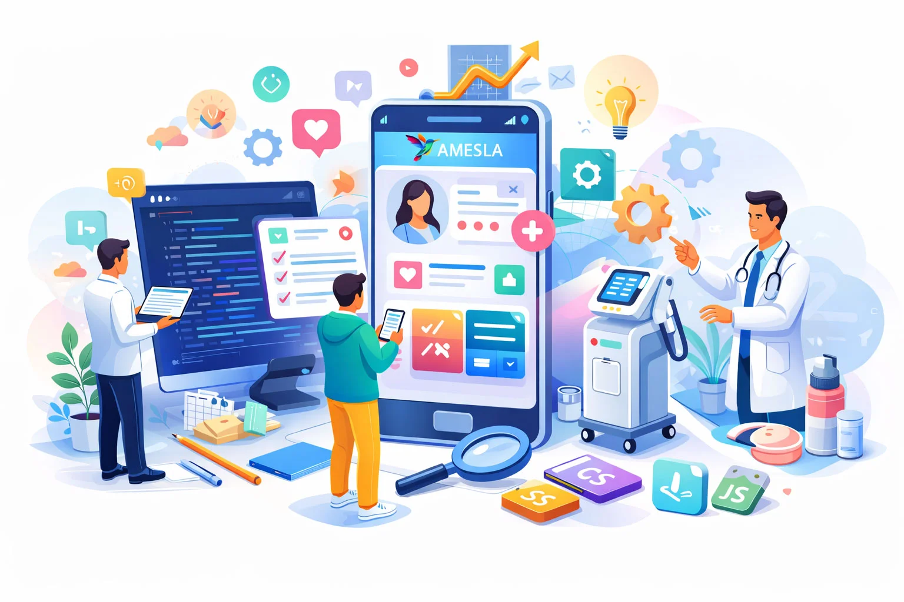

Amesla
Rôle : Lead Dev Fullstack • Équipe de 4 développeurs
Présentation
Logiciel en mode SaaS d'envergure internationale (projet basé en France). Il offre une solution complète de prise de rendez-vous en ligne et de gestion de dossiers patients à destination des praticiens qui exercent leur activité dans un centre médical esthétique.
Stack Technique
💡 Posture Réflexive (Retours d'expérience)
Complexité des données
Gérer les agendas croisés en temps réel et les dossiers des patients a nécessité une base de données MySQL robuste, exploitant toute la puissance de l'ORM Eloquent.
Data Visualisation
Intégration poussée de la librairie amCharts afin d'offrir aux professionnels de santé des statistiques d'activité dynamiques et interactives.
Performance (SPA)
L'utilisation combinée de Laravel, Vue.js et Inertia.js donne à l'interface une réactivité absolue. Pas de rechargement de page : c'est un vrai logiciel métier hébergé sur le web.